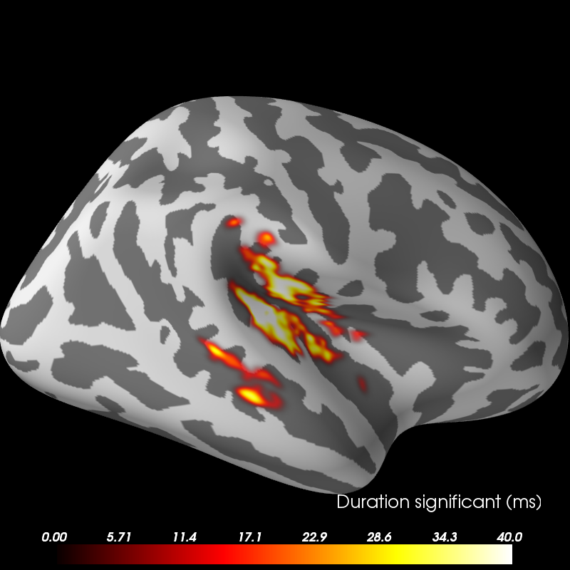

2 samples permutation test on source data with spatio-temporal clustering¶
Tests if the source space data are significantly different between 2 groups of subjects (simulated here using one subject’s data). The multiple comparisons problem is addressed with a cluster-level permutation test across space and time.
Script output:
Morphing data...
Triangle file: created by gramfort on Thu Sep 15 21:13:45 2011 nvert = 155407 ntri = 310810
Triangle file: created by gramfort on Fri Sep 16 00:40:11 2011 nvert = 156866 ntri = 313728
Left-hemisphere map read.
Right-hemisphere map read.
20 smooth iterations done.
20 smooth iterations done.
[done]
Simulating data for 7 and 9 subjects.
Computing connectivity.
-- number of connected vertices : 20484
Clustering.
stat_fun(H1): min=0.000000 max=281.351703
Running intial clustering
Found 219 clusters
Permuting ...
Computing cluster p-values
Done.
Visualizing clusters.
Updating smoothing matrix, be patient..
...
Python source code: plot_cluster_stats_spatio_temporal_2samp.py
# Authors: Alexandre Gramfort <alexandre.gramfort@telecom-paristech.fr>
# Eric Larson <larson.eric.d@gmail.com>
# License: BSD (3-clause)
import os.path as op
import numpy as np
from scipy import stats as stats
import mne
from mne import spatial_tris_connectivity, grade_to_tris
from mne.stats import spatio_temporal_cluster_test, summarize_clusters_stc
from mne.datasets import sample
print(__doc__)
###############################################################################
# Set parameters
data_path = sample.data_path()
stc_fname = data_path + '/MEG/sample/sample_audvis-meg-lh.stc'
subjects_dir = data_path + '/subjects'
# Load stc to in common cortical space (fsaverage)
stc = mne.read_source_estimate(stc_fname)
stc.resample(50)
stc = mne.morph_data('sample', 'fsaverage', stc, grade=5, smooth=20,
subjects_dir=subjects_dir)
n_vertices_fsave, n_times = stc.data.shape
tstep = stc.tstep
n_subjects1, n_subjects2 = 7, 9
print('Simulating data for %d and %d subjects.' % (n_subjects1, n_subjects2))
# Let's make sure our results replicate, so set the seed.
np.random.seed(0)
X1 = np.random.randn(n_vertices_fsave, n_times, n_subjects1) * 10
X2 = np.random.randn(n_vertices_fsave, n_times, n_subjects2) * 10
X1[:, :, :] += stc.data[:, :, np.newaxis]
# make the activity bigger for the second set of subjects
X2[:, :, :] += 3 * stc.data[:, :, np.newaxis]
# We want to compare the overall activity levels for each subject
X1 = np.abs(X1) # only magnitude
X2 = np.abs(X2) # only magnitude
###############################################################################
# Compute statistic
# To use an algorithm optimized for spatio-temporal clustering, we
# just pass the spatial connectivity matrix (instead of spatio-temporal)
print('Computing connectivity.')
connectivity = spatial_tris_connectivity(grade_to_tris(5))
# Note that X needs to be a list of multi-dimensional array of shape
# samples (subjects_k) x time x space, so we permute dimensions
X1 = np.transpose(X1, [2, 1, 0])
X2 = np.transpose(X2, [2, 1, 0])
X = [X1, X2]
# Now let's actually do the clustering. This can take a long time...
# Here we set the threshold quite high to reduce computation.
p_threshold = 0.0001
f_threshold = stats.distributions.f.ppf(1. - p_threshold / 2.,
n_subjects1 - 1, n_subjects2 - 1)
print('Clustering.')
T_obs, clusters, cluster_p_values, H0 = clu =\
spatio_temporal_cluster_test(X, connectivity=connectivity, n_jobs=2,
threshold=f_threshold)
# Now select the clusters that are sig. at p < 0.05 (note that this value
# is multiple-comparisons corrected).
good_cluster_inds = np.where(cluster_p_values < 0.05)[0]
###############################################################################
# Visualize the clusters
print('Visualizing clusters.')
# Now let's build a convenient representation of each cluster, where each
# cluster becomes a "time point" in the SourceEstimate
fsave_vertices = [np.arange(10242), np.arange(10242)]
stc_all_cluster_vis = summarize_clusters_stc(clu, tstep=tstep,
vertices=fsave_vertices,
subject='fsaverage')
# Let's actually plot the first "time point" in the SourceEstimate, which
# shows all the clusters, weighted by duration
subjects_dir = op.join(data_path, 'subjects')
# blue blobs are for condition A != condition B
brain = stc_all_cluster_vis.plot('fsaverage', 'inflated', 'both',
subjects_dir=subjects_dir, clim='auto',
time_label='Duration significant (ms)')
brain.set_data_time_index(0)
brain.show_view('lateral')
brain.save_image('clusters.png')
Total running time of the example: 122 seconds